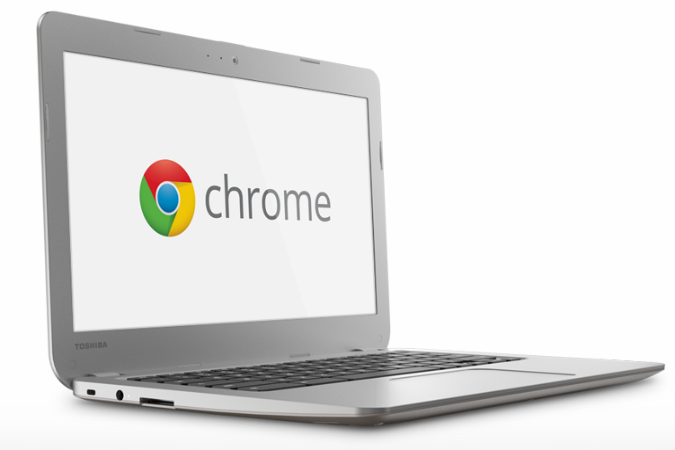
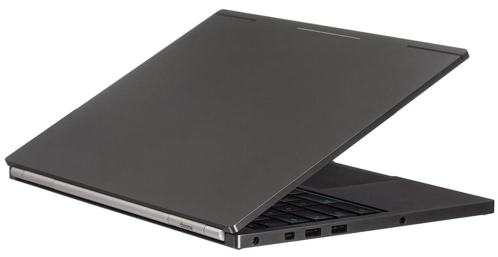
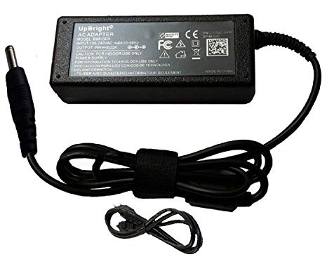
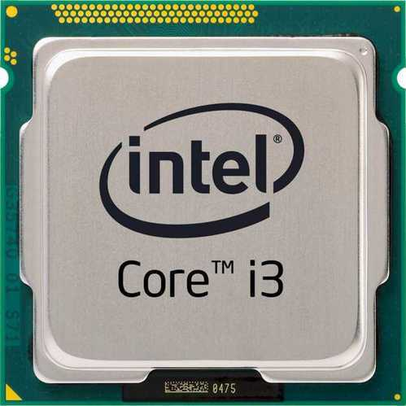
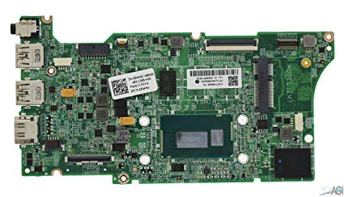
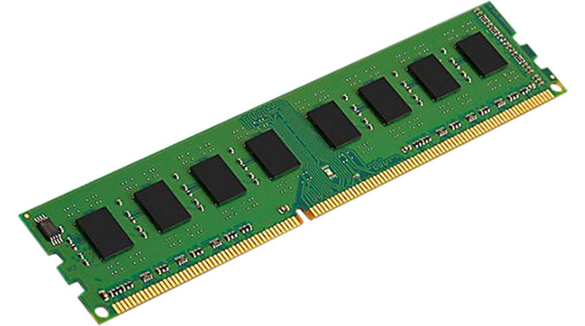
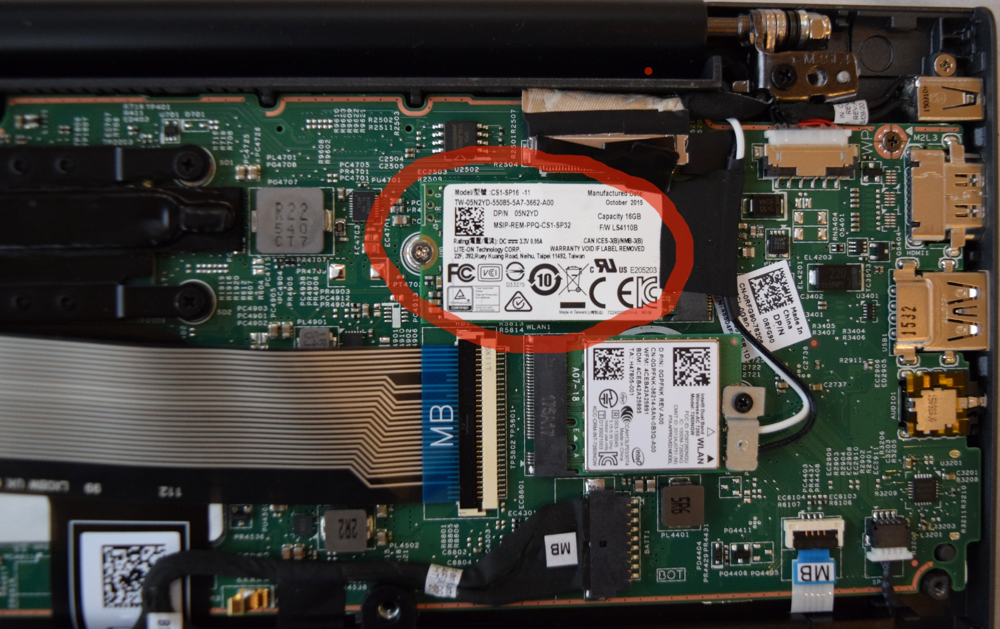
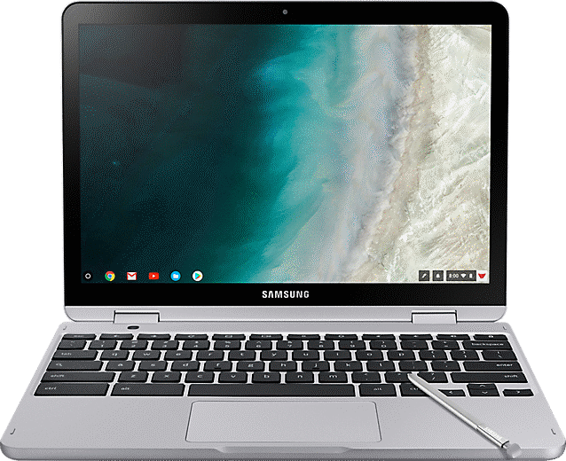
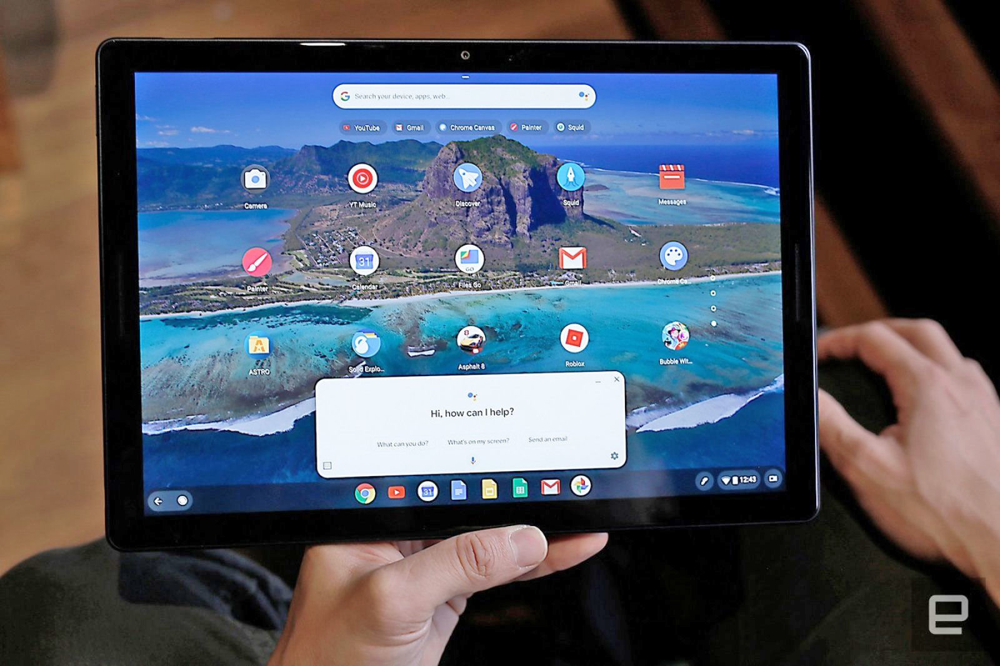

VanshPC.
VanshPC.
The State-of-the-Art Macbook Air offers some of
the best components available for a cost-effective price.
Laptop shells are the outside esthetic and mesh that holds all the inner components together. A necessity for any laptop or PC to function effectively and nicely. It helps with heat deprivation and longevity of the laptop in general.
The Google Chromebook incorporates a plastic exterior with aluminium layered under the plastic. Still very durable in any scenario, this laptop shell is good in protecting the components within the device. It is great for transport and portable use.
The power supply dictates and allows for the use of the internal components of the computer. Every part needs energy and it all comes from the power supply. It is connected to the outer adapter that gets power from plugs. Various power supplies indicates the efficiency of the power supply.
With Google’s very own power supply, the ChromeBook is able to last for over 10 hours on one charge and able to transmit energy at an efficient rate. It is compatible with ac adapters ranging to 50 watts in power.
The CPU or Central Processing Unit is responsible for all the calculations that happens on the computer and dictate all the processes that happen on the computer. It is essentially responsible for the computer's main functions. It dictates the functions and communications between different components to create a fast efficient system.
The Google Chromebook incorporates the Exynos 5 dual core processor which is able to perform day-to-day functions for any regular laptop user. It is an excellent solution for school work and work in general. Not recommended for intense cpu demand.
The motherboard allows the communication between all the components and dictates everything, essentially creating the system. It is the brain of the computer system and allows the computer to have functionality and to be cohesive. It has many sockets and plugs to allows all the systems to be connected.
The Google Chromebook uses the Cb001 motherboard which is a compact yet sturdy device that allows for fast communication amongst all components. With it’s efficient energy consumption, this is a cost/energy effective component within this laptop. Perfect for work/school related tasks.
The RAM holds and stores data in memory. It essentially allows for information to be quickly read and accessed. The higher the ram the more it can hold and the faster it tends to be.
The Google Chromebook comes with 4 gb of ram, which comparatively is low but it is enough to handle most tasks for the average person. However, you won’t be able to log many tasks at once, but through it’s lower ram, comes a much more affordable price.
The storage system holds all your files that you create and allows for mass storage. Storage system comes either in Hard Drives, HDs or Solid State Drives, SSDs. HDs usually hold more files however can be quite slow and SSDs are smaller but are much faster. SSDs are more usually preferred for PCs and laptops as people don’t usually have lots of files.
Interestingly, the Google Chromebook comes with essentially 100 gigabytes of cloud storage. The laptop itself doesn’t have a storage unit and all files are easily accessible from any laptop. This makes it ideal for someone on the go and needs constant access to their important files.
Display is how big the screen is and the resolution of the screen. Usually, the bigger the display, the better the quality. Must computers have a ratio of 16x9 resolution which is standard among all pc manufactures and what our society has come to like.
The resolution for the Google Chromebook is 1920x1080 pixels. It’s pretty standard compared to any other laptop on the market. The size is 12 inches which allows the Chromebook to be compact and to be easily taken on the go.
Operating System is the graphical user interface the user sees to navigate their files and computer system. There are various operating systems out there that offer different modes of customizability. OS is what makes it easy for users to actually use the computer and is what the user sees the most.
The Google Chromebook uses Chrome OS. Developed by google, Chrome OS allows for easy access to all google services that they've developed. It is tailored toward google chrome and chrome services.